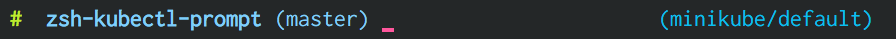

Golang开源项目¶
基础¶
官网¶
golang: https://github.com/golang/go
golang基础¶
基础库¶
errors and functions to annotate errors: https://github.com/juju/errors
if err := SomeFunc(); err != nil { return errors.Annotate(err, "more context") }
配置文件相关¶
yaml: https://github.com/go-yaml/yaml/ (gopkg.in/yaml.v2)
便捷的使用配置文件中的数据: https://github.com/spf13/viper
replacement for Go’s flag package: https://github.com/spf13/pflag
json优化版: https://github.com/json-iterator/go
goreman: https://github.com/mattn/goreman
Golang工具包¶
总地址: golang.org/x/tools
mirror: https://github.com/golang/tools/
stringer: https://golang.org/x/tools/cmd/stringer
godoc.org: https://github.com/golang/gddo
通知¶
日志log¶
https://github.com/sirupsen/logrus
可以设定日志颜色 可以设定只打印指定级别日志 可以设定打印日志到文件、hook等 注: v1.2.0后可打印当前文件和当前行
CNCF Jaeger, a Distributed Tracing Platform: https://github.com/jaegertracing/jaeger.git
rolling log: https://github.com/natefinch/lumberjack
Leveled execution logs for Go: https://github.com/golang/glog
zerolog: https://github.com/rs/zerolog (项目 https://github.com/alibaba/kt-connect 中使用)
环境变量¶
可读取文件.env来设定环境变量: https://github.com/joho/godotenv
把环境变量的值自动赋值给自定义类型的变量: https://github.com/kelseyhightower/envconfig
cli命令¶
辅助代码生成工具¶
- https://github.com/golang/mock
gomock库: github.com/golang/mock/gomock
辅助代码生成工具mockgen: github.com/golang/mock/mockgen
Type-driven code generation for Go: https://github.com/clipperhouse/gen
数据库¶
经济图数据库: https://github.com/degdb/degdb
- A realtime distributed messaging platform: https://github.com/nsqio/nsq
The official Go package for NSQ: https://github.com/nsqio/go-nsq
distributed, highly available, and data center aware solution: https://github.com/hashicorp/consul
Programmatic lb backend(inspired by Hystrix): https://github.com/vulcand/vulcand
Global Distributed Client Side Rate Limiting: https://github.com/youtube/doorman
database clustering system for horizontal scaling of MySQL: https://github.com/vitessio/vitess
pingcap可水平扩展、兼容MySQL: https://github.com/pingcap/tidb
cloud-native distributed SQL DB: https://github.com/cockroachdb/cockroach
- LevelDB key/value database in Go: https://github.com/syndtr/goleveldb
原版(c++): https://github.com/google/leveldb
数据库驱动¶
sql通用扩展： https://github.com/jmoiron/sqlx
- ORM library for Golang: https://github.com/go-gorm/gorm/stargazers
proxy based rediscluster solution: https://github.com/CodisLabs/codis
lib工具¶
针对结构体的校验逻辑: https://github.com/asaskevich/govalidator
protobuf 文件动态解析的接口，可以实现反射相关的能力: https://github.com/jhump/protoreflect
表达式引擎工具: https://github.com/Knetic/govaluate
表达式引擎工具: https://github.com/google/cel-go
ratelimit 工具:
https://github.com/uber-go/ratelimit https://blog.csdn.net/chenchongg/article/details/85342086 https://github.com/juju/ratelimit
golang 熔断的库:
熔断除了考虑频率限制，还要考虑 qps，出错率等其他东西. https://github.com/afex/hystrix-go https://github.com/sony/gobreaker
tail 工具库: https://github.com/hpcloud/taglshi
字符串¶
字符串匹配optimized for filenames and code symbols: https://github.com/sahilm/fuzzy
uuid¶
日期转化 date¶
Dateparse: https://github.com/araddon/dateparse
http 工具¶
模仿 python 的 Request: https://github.com/levigross/grequests
numerical and scientific algorithms¶
- 矩阵，统计，积分，微分等(matrices, statistics, integration, differentiation): https://github.com/gonum
框架¶
web 框架: https://github.com/go-chi/chi
web 框架: https://github.com/gin-gonic/gin
web 框架: https://github.com/astaxie/beego
- web 框架: https://github.com/gofiber/fiber
inspired by the Node.js Express framework
built on top of Fasthttp
web框架(cayley): https://github.com/gobuffalo/packr
文件上传断点续传: https://github.com/tus/tusd
轻量级TCP并发服务器框架: https://github.com/aceld/zinx
rendering JSON, XML: https://github.com/unrolled/render
The boss of http auth(CSRF Protection): https://github.com/volatiletech/authboss
微服务框架¶
- A Go standard library for microservices: https://github.com/micro/go-micro
a framework for cloud native development: https://github.com/micro/micro
go-micro 到底是个啥？ - 知乎: https://zhuanlan.zhihu.com/p/58985155
go-zero is a web and rpc framework: https://github.com/tal-tech/go-zero
- A standard library for microservices: https://github.com/go-kit/kit
阿里一个人推荐 https://www.cnblogs.com/alisystemsoftware/p/12408258.html
Microservices with GoKit: https://danielsinnott.com/blog/26
jupiter: https://github.com/douyu/jupiter
websocket¶
Tiny WebSocket library for Go: https://github.com/gobwas/ws
代理&网关¶
caddy(类nginx,自动支持http2,內建了 Let’s Encrypt): https://github.com/caddyserver/caddy/tree/v2
traefik(可以跟 Docker 很深度的結合): https://github.com/containous/traefik
网络模拟器¶
web fuzzer: https://github.com/ffuf/ffuf
Cisco Packet Tracer: Cisco Packet Tracer（以下简称PT）是一款由思科公司开发的，为网络课程的初学者提供辅助教学的实验模拟器。使用者可以在该模拟器中搭建各种网络拓扑，实现基本的网络配置。
华为eNSP: 华为eNSP是一款由华为公司研发的虚拟仿真软件，主要针对网络路由器、交换机进行软件仿真，支持大型网络模拟，让用户在没有真实设备的情况下，使用模拟器也能制作网络拓扑并进行实验。
H3C H3C Cloud Lab: H3C H3C Cloud Lab是一款由华三公司研发的网络云平台，模拟真实设备，为用户提供基本的设备信息，并满足初级用户在没有真实设备的条件下进行设备配置的学习需要。
后台管理¶
GUI¶
windows: https://github.com/lxn/walk
- Cross platform GUI in Go based on Material Design: https://github.com/fyne-io/fyne
混沌工程¶
DEVOPS¶
alertmanager: https://github.com/prometheus/alertmanager
prometheus规模部署方案: https://github.com/thanos-io/thanos
统计A well tested and comprehensive Golang statistics library: https://github.com/montanaflynn/stats
Status Page for monitoring your websites and applications: https://github.com/hunterlong/statping
小米企业级监控平台: https://github.com/open-falcon/falcon-plus
监控,Top-like interface for container metrics: https://github.com/bcicen/ctop
Like Prometheus, but for logs: https://github.com/grafana/loki
Prometheus Operator: https://github.com/prometheus-operator/prometheus-operator
微服务¶
rancher: https://github.com/rancher/rancher
rancher os: https://github.com/rancher/os
OCI implementation of Kubernetes CRI: https://github.com/cri-o/cri-o
kubernetes: https://github.com/kubernetes/kubernetes
linuxkit: https://github.com/linuxkit/linuxkit
automated deployment and declarative configuration: https://github.com/box/kube-applier
kustomize: https://github.com/kubernetes-sigs/kustomize
kubedog: https://github.com/flant/kubedog
clientGo: https://github.com/kubernetes/client-go
kubeflow: https://github.com/kubeflow/kubeflow
cadvisor: https://github.com/google/cadvisor
ube-state-metrics: https://github.com/kubernetes/kube-state-metrics
node_exporter: https://github.com/prometheus/node_exporter
High Performance, Kubernetes Native Object Storage: https://github.com/minio/minio
Enterprise-grade container platform: https://github.com/kubesphere/kubesphere
A tool for exploring each layer in a docker image: https://github.com/wagoodman/dive
企业级Kubernetes网络结构: https://github.com/alauda/kube-ovn
Kubernetes Operations (kops): https://github.com/kubernetes/kops
Purpose-built OS for Kubernetes: https://github.com/rancher/k3os
Application Deployment Engine for Kubernetes: https://github.com/rancher/rio
Build and deploy Go applications on Kubernetes: https://github.com/google/ko
container engine¶
docker: https://github.com/docker
- podman(means: Pod Manager tool)
A tool for managing OCI containers and pods: https://github.com/containers/podman
A tool that facilitates building OCI images: https://github.com/containers/buildah
Dockerfile-agnostic builder toolkit: https://github.com/moby/buildkit
alias docker=podman
k8s网络¶
networking plugins, maintained by the CNI team: https://github.com/containernetworking/plugins
flannel is a network fabric for containers, designed for Kubernetes: https://github.com/coreos/flannel
k8s集群¶
轻量级 Kubernetes 发行版: https://github.com/KubeOperator/KubeOperator
k8s lb¶
load balancer designed for bare metal Kubernetes clusters: https://github.com/kubesphere/porter
k8s tool¶
Highly extensible platform for developers: https://github.com/vmware-tanzu/octant
operator¶
Istio微服务架构¶
Connect, secure, control, and observe services: https://github.com/istio/istio
An awesome dashboard for Istio built: https://github.com/XiaoMi/naftis
observability for the Istio service mesh: https://github.com/kiali/kiali
Service mesh management for Istio: https://kiali.io/
cloud native proxy: https://github.com/mosn/mosn
CI&CD&Git¶
gitlab-runner: https://gitlab.com/gitlab-org/gitlab-runner
makes git easier to use with GitHub: https://github.com/github/hub
索引¶
开发工具类¶
查看某一个库的依赖情况: https://github.com/KyleBanks/depth
通过监听当前目录下的相关文件变动，进行实时编译: https://github.com/silenceper/gowatch
代码质量检测工具(代替golint): https://github.com/mgechev/revive
代码调用链可视化工具: https://github.com/TrueFurby/go-callvis
开发流程改进工具: https://github.com/oxequa/realize
自动生成测试用例工具(已集成至各ide): https://github.com/cweill/gotests
a tool to build, deploy, and release any application on any platform: https://github.com/hashicorp/waypoint
A command line tool to execute Go functions: https://github.com/shurcooL/goexec
调试工具¶
debugger: https://github.com/go-delve/delve
perf 工具(go版ps命令): https://github.com/google/gops
psutil for golang(inspired by a Python package <https://pypi.org/project/psutil/>): https://github.com/shirou/gopsutil
打印deep pretty printer: https://github.com/davecgh/go-spew
配置化生成证书: https://github.com/cloudflare/cfssl
免费的证书获取工具: https://github.com/Neilpang/acme.sh
敏感信息和密钥管理工具: https://github.com/hashicorp/vault
高度可配置化的 http 转发工具，基于 etcd 配置: https://github.com/gojek/weaver
分布式任务系统: https://github.com/shunfei/cronsun/blob/master/README_ZH.md
自动化运维平台 Gaia: https://github.com/gaia-pipeline/gaia
定时¶
git版本控制¶
使用sql查git commit: https://github.com/augmentable-dev/gitqlite
静态文件打包到一个go文件¶
Note
golang1.16版本增加了``embed``库解决此类问题
其他¶
URL短链接服务: https://github.com/andyxning/shortme
从一个源配置为多平台创建相同镜像: https://github.com/hashicorp/packer
updating terminal output in realtime: https://github.com/gosuri/uilive
Go CGO cross compiler: https://github.com/karalabe/xgo
A JavaScript interpreter in Go: https://github.com/robertkrimen/otto
协议¶
DTLS 1.2 Server/Client implementation for Go: https://github.com/pion/dtls
单元测试¶
- http://labix.org/gocheck
gopkg.in/check.v1
BDD Testing Framework for Go: https://github.com/onsi/ginkgo
A toolkit with common assertions and mocks: https://github.com/stretchr/testify
filesystem¶
a distributed object store and file system: https://github.com/chrislusf/seaweedfs
A distributed key value store in under 1000 lines: https://github.com/geohot/minikeyvalue
压测工具¶
负载工具类似ab: https://github.com/rakyll/hey
HTTP load testing tool and library. It’s over 9000!: https://github.com/tsenart/vegeta
Generate HTTP load and plot the results in real-time: https://github.com/nakabonne/ali
pprof¶
A wrapper for golang web framework gin to use net/http/pprof easily: https://github.com/DeanThompson/ginpprof
go-torch 工具(deprecated, use pprof): https://github.com/uber-archive/go-torch
开源项目收集¶
A curated list of awesome Go frameworks, libraries and software: https://github.com/avelino/awesome-go
MonkeyPatch: https://github.com/bouk/monkey
视频流¶
rtmp 协议: https://github.com/gwuhaolin/livego
机器人robot¶
Go library for accessing the GitHub API: https://github.com/google/go-github
加密-encryption¶
A simple, modern and secure encryption tool (and Go library): https://github.com/FiloSottile/age
队列queue¶
asynchronous task queue/job queue: https://github.com/RichardKnop/machinery
论坛bbs¶
Self-Hosted, Twitter™-like Decentralised microBlogging platform: https://github.com/jointwt/twtxt
其他功能¶
AI¶
Brings SQL and AI together: https://github.com/sql-machine-learning/sqlflow
Kubernetes-native Deep Learning Framework: https://github.com/sql-machine-learning/elasticdl
区块链blockchain¶
Filecoin protocol in Go: https://github.com/filecoin-project/lotus
其他相关¶
[医学]医学数字成像和通信: https://github.com/suyashkumar/dicom
资料¶
基于 Go 构建滴滴核心业务平台的实践.pdf: https://github.com/gopherchina/conference
其他¶
Golang malware development framework: https://github.com/redcode-labs/Coldfire
Heroku-like memorable random name generator: https://github.com/yelinaung/go-haikunator
个人数据泄漏检测网站，适用于 QQ / 京东 / 顺丰 / 微博: https://github.com/Brown-Ewing/privacy
工具¶
An offline solution to convert pdfs into audiobooks: https://github.com/Harry-027/go-audio
Golang commandline wrapper for wkhtmltopdf: https://github.com/SebastiaanKlippert/go-wkhtmltopdf
颜色¶
画图¶
https://github.com/mingrammer/diagrams (python版)
图片处理¶
- Fast and secure standalone server for resizing and converting remote images: https://github.com/imgproxy/imgproxy
- Personal Photo Management: https://github.com/photoprism/photoprism
docker版: https://docs.photoprism.org/getting-started/docker-compose/
powered by Go and Google TensorFlow
共享¶
ftp¶
SFTP server can serve local filesystem, S3, GCS: https://github.com/drakkan/sftpgo
k8s工具¶
k8s 管理: https://github.com/derailed/k9s
- Faster way to switch between clusters and namespaces in kubectl: https://github.com/ahmetb/kubectx
kubectx
kubens
Kubernetes prompt info for bash and zsh: https://github.com/jonmosco/kube-ps1
A Kubernetes cluster resource sanitizer: https://github.com/derailed/popeye
Multi pod and container log tailing for Kubernetes: https://github.com/wercker/stern
Display information about the kubectl in zsh prompt: https://github.com/superbrothers/zsh-kubectl-prompt

tail Kubernetes logs from multiple pods: https://github.com/johanhaleby/kubetail
网络工具¶
新型的http反向代理、负载均衡软件: https://github.com/containous/traefik
Google 开源的一个基于 Linux 的负载均衡系统: https://github.com/google/seesaw
简单 HTTP 流量复制工具(原来名gor): https://github.com/buger/goreplay
穿墙的 HTTP 代理服务器: https://github.com/cyfdecyf/cow
家庭或者企业网络的透明代理,可用来翻墙等: https://github.com/xjdrew/kone
高速的 P2P 端口映射工具，同时支持Socks5代理: https://github.com/vzex/dog-tunnel
反向代理工具，快捷开放内网端口供外部使用: https://github.com/inconshreveable/ngrok
Cloud Native Tunnel for APIs: https://github.com/inlets/inlets
GPS/geocoding¶
- nominatim:
Open Source search based on OpenStreetMap data: https://github.com/osm-search/Nominatim
PHP + C
数据导入: https://nominatim.org/release-docs/latest/admin/Import/
- 商用版:
PickPoint: https://www.pickpoint.io/
MapQuest: https://developer.mapquest.com/documentation/open/
- GeoPy:
github: https://github.com/geopy/geopy
geopy is a Python client for several popular geocoding web services.
geopy is just a library which provides these implementations for many different services in a single package.
- 数据:
Geofabrik: https://download.geofabrik.de/
other providers for extracts: https://wiki.openstreetmap.org/wiki/Planet.osm#Downloading
- GEO Golang 版:
- photon:
Java, 1.1k star
- Psql:
PostgreSQL/PostGIS: 空间数据存储扩展